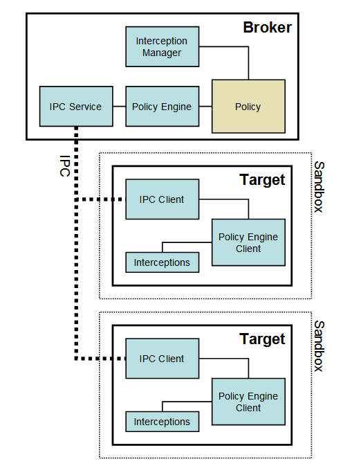

Security is one of the most important goals for Thorium. The key to security is understanding: we can only truly secure a system if we fully understand its behaviors with respect to the combination of all possible inputs in all possible states. For a codebase as large and diverse as Thorium, reasoning about the combined behavior of all its parts is nearly impossible. The sandbox objective is to provide hard guarantees about what ultimately a piece of code can or cannot do no matter what its inputs are.
Sandbox leverages the OS-provided security to allow code execution that cannot make persistent changes to the computer or access information that is confidential. The architecture and exact assurances that the sandbox provides are dependent on the operating system. This document covers the Windows implementation as well as the general design. The Linux implementation is described here, the OSX implementation here.
If you don't feel like reading this whole document you can read the Sandbox FAQ instead. A description of what the sandbox does and doesn't protect against may also be found in the FAQ.
main() function. In
practice, it could happen as soon as the first external input is accepted, or
right before the main loop is entered.The Windows sandbox is a user-mode only sandbox. There are no special kernel mode drivers, and the user does not need to be an administrator in order for the sandbox to operate correctly. The sandbox is designed for both 32-bit and 64-bit processes and has been tested on all Windows OS flavors between Windows 7 and Windows 10, both 32-bit and 64-bit.
Sandbox operates at process-level granularity. Anything that needs to be sandboxed needs to live on a separate process. The minimal sandbox configuration has two processes: one that is a privileged controller known as the broker, and one or more sandboxed processes known as the target. Throughout the documentation and the code these two terms are used with that precise connotation. The sandbox is provided as a static library that must be linked to both the broker and the target executables.
In Thorium, the broker is always the browser process. The broker, is in broad terms, a privileged controller/supervisor of the activities of the sandboxed processes. The responsibilities of the broker process are:
The broker should always outlive all the target processes that it spawned. The sandbox IPC is a low-level mechanism (different from Thorium's IPC) that is used to transparently forward certain Windows API calls from the target to the broker: these calls are evaluated against the policy. The policy-allowed calls are then executed by the broker and the results returned to the target process via the same IPC. The job of the interceptions manager is to patch the Windows API calls that should be forwarded via IPC to the broker.
In Thorium, the renderers are always target processes, unless the
--no-sandbox command line has been specified for the browser process. The
target process hosts all the code that is going to run inside the sandbox, plus
the sandbox infrastructure client side:
Items 2,3 and 4 are part of the sandbox library that is linked with the code to be sandboxed.
The interceptions (also known as hooks) are how Windows API calls are forwarded via the sandbox IPC to the broker. It is up to the broker to re-issue the API calls and return the results or simply fail the calls. The interception + IPC mechanism does not provide security; it is designed to provide compatibility when code inside the sandbox cannot be modified to cope with sandbox restrictions. To save unnecessary IPCs, policy is also evaluated in the target process before making an IPC call, although this is not used as a security guarantee but merely a speed optimization.
It is the expectation that in the future most plugins will run inside a target process.

At its core, the sandbox relies on the protection provided by four Windows mechanisms:
These mechanisms are highly effective at protecting the OS, its configuration, and the user's data provided that:
** Note that extra mitigations above and beyond this base/core will be described in the "Process Mitigations" section below.
One issue that other similar sandbox projects face is how restricted can the token and job be while still having a properly functioning process. For the Thorium sandbox, the most restrictive token takes the following form:
With the caveats described above, it is near impossible to find an existing resource that the OS will grant access with such a token. As long as the disk root directories have non-null security, even files with null security cannot be accessed. The Thorium renderer runs with this token, which means that almost all resources that the renderer process uses have been acquired by the Browser and their handles duplicated into the renderer process.
Note that the token is not derived from anonymous or from the guest token; it is derived from the user's token and thus associated to the user logon. As a result, any auditing that the system or the domain has in place can still be used.
By design, the sandbox token cannot protect the non-securable resources such as:
See NULL DACLs and Other Dangerous ACE Types, Secure Coding Techniques, 195-199 for more information.
The target process also runs under a Job object. Using this Windows mechanism, some interesting global restrictions that do not have a traditional object or security descriptor associated with them are enforced:
SystemParametersInfo(), which can
be used to swap the mouse buttons or set the screen saver timeoutSetWindowsHookEx())Thorium renderers normally run with all these restrictions active. Each renderer runs in its own Job object. Using the Job object, the sandbox can (but currently does not) prevent:
More information about Windows Job Objects can be found here.
The token and the job object define a security boundary: that is, all processes with the same token and in the same job object are effectively in the same security context. However, one not-well-understood fact is that applications that have windows on the same desktop are also effectively in the same security context because the sending and receiving of window messages is not subject to any security checks. Sending messages across desktops is not allowed. This is the source of the infamous "shatter" attacks, which is why services should not host windows on the interactive desktop. A Windows desktop is a regular kernel object that can be created and assigned a security descriptor.
In a standard Windows installation, at least two desktops are attached to the interactive window station; the regular (default) desktop, and the logon desktop. The sandbox creates a third desktop that is associated to all target processes. This desktop is never visible or interactive and effectively isolates the sandboxed processes from snooping the user's interaction and from sending messages to windows operating at more privileged contexts.
The only disadvantage of an alternate desktop is that it uses approximately 4MB of RAM from a separate pool, possibly more on Vista.
More information about Window Stations
Integrity levels are available on Windows Vista and later versions. They don't define a security boundary in the strict sense, but they do provide a form of mandatory access control (MAC) and act as the basis of Microsoft's Internet Explorer sandbox.
Integrity levels are implemented as a special set of SID and ACL entries representing five levels of increasing privilege: untrusted, low, medium, high, system. Access to an object may be restricted if the object is at a higher integrity level than the requesting token. Integrity levels also implement User Interface Privilege Isolation, which applies the rules of integrity levels to window messages exchanged between different processes on the same desktop.
By default, a token can read an object of a higher integrity level, but not write to it. Most desktop applications run at medium integrity (MI), while less trusted processes like Internet Explorer's protected mode and our GPU sandbox run at low integrity (LI), while our renderer processes run at the lowest Untrusted integrity level.
A low integrity level token can access only the following shared resources:
%USER PROFILE%\AppData\LocalLowHKEY_CURRENT_USER\Software\AppDataLowChangeWindowMessageFilterWhile an Untrusted integrity level can only write to resources which have a null DACL or an explicit Untrusted Mandatory Level.
You'll notice that the previously described attributes of the token, job object, and alternate desktop are more restrictive, and would in fact block access to everything allowed in the above list. So, the integrity level is a bit redundant with the other measures, but it can be seen as an additional degree of defense-in-depth, and its use has no visible impact on performance or resource usage.
The integrity level of different Chrome components will change over time as functionality is split into smaller services. At M75 the browser, crash handler, and network utility processes run at Medium integrity, the GPU process at Low and most remaining services including isolated renderers at Untrusted.
More information on integrity levels can be found here and in Chapter 7 of Windows Internals, Part 1, 7th Ed..
Most process mitigation policies can be applied to the target process by means of SetProcessMitigationPolicy. The sandbox uses this API to set various policies on the target process for enforcing security characteristics.
ProcessSystemCallDisablePolicy, which allows selective disabling of system
calls available from the target process.DisallowWin32kSystemCalls which
means that calls from user mode that are serviced by win32k.sys are no
longer permitted. This significantly reduces the kernel attack surface
available from a renderer. See
here
for more details.ProcessExtensionPointDisablePolicyProcessFontDisablePolicyProcessSignaturePolicyProcessImageLoadPolicyProcessImageLoadPolicyJOB_LIMITED_USER, set
PROC_THREAD_ATTRIBUTE_CHILD_PROCESS_POLICY to
PROCESS_CREATION_CHILD_PROCESS_RESTRICTED via UpdateProcThreadAttribute().SeChangeNotifyPrivilege and SeIncreaseWorkingSetPrivilege), running at Low
integrity level and an array of "Capabilities" which can be mapped to
allow/deny what the process is allowed to do (see
MSDN
for a high level description). The capability most interesting from a sandbox
perspective is denying is access to the network, as it turns out network
checks are enforced if the token is a Low Box token and the INTERNET_CLIENT
Capability is not present.ALL RESTRICTED APPLICATION PACKAGES or a specific package SID. This is
opposed to App Container which uses ALL APPLICATION PACKAGES.base/win/sid.h) or
via 'named capabilities' resolved through call to
DeriveCapabilitySidsFromName
which are not really strictly defined anywhere but can be found in various
places
and include capabilities such as:lpacComregistryReadlpacWebPlatformlpacClipboardregistryRead is important for registry read access, and Windows
system files have ALL RESTRICTED APPLICATION PACKAGES ACE on them already,
but other files that the sandbox process needs access to including the
binaries (e.g. chrome.exe, chrome.dll) and also any data files need ACLs to
be laid down. This is typically done by the installer, and also done
automatically for tests. However, if the LPAC sandbox is to be used in other
environments then these filesystem permissions need to be manually laid down
using icacls, the installer, or a similar tool. An example of a ACE that
could be used can be found in
testing/scripts/common.py
however in high security environments a more restrictive SID should be used
such as one from the
installer.The operating system might have bugs. Of interest are bugs in the Windows API that allow the bypass of the regular security checks. If such a bug exists, malware will be able to bypass the sandbox restrictions and broker policy and possibly compromise the computer. Under Windows, there is no practical way to prevent code in the sandbox from calling a system service.
In addition, third party software, particularly anti-malware solutions, can create new attack vectors. The most troublesome are applications that inject dlls in order to enable some (usually unwanted) capability. These dlls will also get injected in the sandbox process. In the best case they will malfunction, and in the worst case can create backdoors to other processes or to the file system itself, enabling specially crafted malware to escape the sandbox.
The actual restrictions applied to a target process are configured by a policy. The policy is just a programmatic interface that the broker calls to define the restrictions and allowances. Four functions control the restrictions, roughly corresponding to the four Windows mechanisms:
TargetPolicy::SetTokenLevel()TargetPolicy::SetJobLevel()TargetPolicy::SetIntegrityLevel()TargetPolicy::SetDesktop()The first three calls take an integer level parameter that goes from very strict to very loose; for example, the token level has 7 levels and the job level has 5 levels. Thorium renderers are typically run with the most strict level in all four mechanisms. Finally, the last (desktop) policy is binary and can only be used to indicate if a target is run on an alternate desktop or not.
The restrictions are by design coarse in that they affect all securable
resources that the target can touch, but sometimes a more finely-grained
resolution is needed. The policy interface allows the broker to specify
exceptions. An exception is a way to take a specific Windows API call issued in
the target and proxy it over to the broker. The broker can inspect the
parameters and re-issue the call as is, re-issue the call with different
parameters, or simply deny the call. To specify exceptions there is a single
call: AddRule. The following kinds of rules for different Windows subsystems
are supported at this time:
The exact form of the rules for each subsystem varies, but in general rules are triggered based on a string pattern. For example, a possible file rule is:
AddRule(SUBSYS_FILES, FILES_ALLOW_READONLY, L"C:\\temp\\app_log\\d*.dmp")
This rule specifies that access will be granted if a target wants to open a
file, for read-only access as long as the file matches the pattern expression;
for example C:\temp\app_log\domino.dmp is a file that satisfies the
pattern. Consult the header files for an up-to-date list of supported objects
and supported actions.
Rules can only be added before each target process is spawned, and cannot be modified while a target is running, but different targets can have different rules.
In Thorium, the policies associated with active processes can be viewed at
chrome://sandbox. Tracing of the sandbox category will output the policy used
when a process is launched. Tracing can be enabled using chrome://tracing or by
using the --trace-startup=-*,disabled-by-default-sandbox command line flag.
Trace output can be investigated with //tools/win/trace-sandbox-viewer.py.
Targets do not start executing with the restrictions specified by policy. They start executing with a token that is very close to the token the regular user processes have. The reason is that during process bootstrapping the OS loader accesses a lot of resources, most of them are actually undocumented and can change at any time. Also, most applications use the standard CRT provided with the standard development tools; after the process is bootstrapped the CRT needs to initialize as well and there again the internals of the CRT initialization are undocumented.
Therefore, during the bootstrapping phase the process actually uses two tokens:
the lockdown token which is the process token as is and the initial token which
is set as the impersonation token of the initial thread. In fact the actual
SetTokenLevel definition is:
SetTokenLevel(TokenLevel initial, TokenLevel lockdown)
After all the critical initialization is done, execution continues at main()
or WinMain(), here the two tokens are still active, but only the initial
thread can use the more powerful initial token. It is the target's
responsibility to discard the initial token when ready. This is done with a
single call:
LowerToken()
After this call is issued by the target the only token available is the lockdown token and the full sandbox restrictions go into effect. The effects of this call cannot be undone. Note that the initial token is a impersonation token only valid for the main thread, other threads created in the target process use only the lockdown token and therefore should not attempt to obtain any system resources subject to a security check.
The fact that the target starts with a privileged token simplifies the explicit
policy since anything privileged that needs to be done once, at process startup
can be done before the LowerToken() call and does not require to have rules in
the policy.
Important
Make sure any sensitive OS handles obtained with the initial token are closed before calling LowerToken(). Any leaked handle can be abused by malware to escape the sandbox.